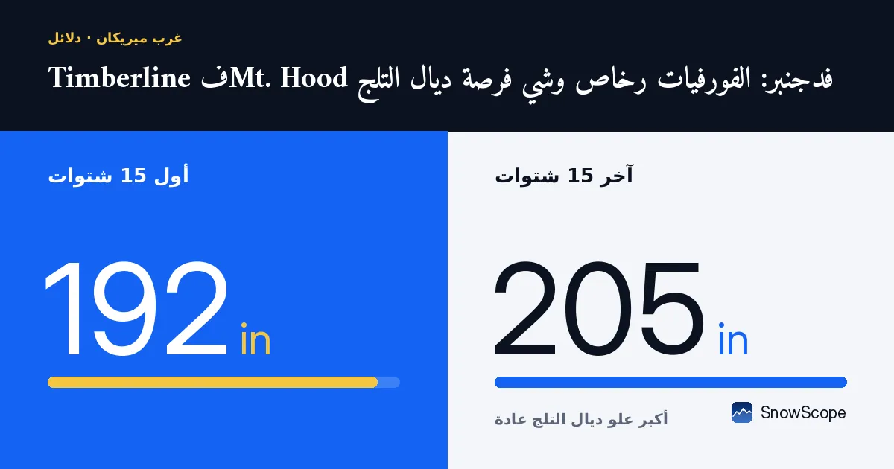

Timberline فMt. Hood فدجنبر: الفورفيات رخاص وشي فرصة ديال التلج
منطقة Timberline Lodge للتزلج كتقع فوق أعلى بركان فـ أوريغون وفيه التلج اللي كيزيد بشكل حاد كيما كتصعد لفوق. الجهة الوسطانية كتحتفظ بالتلج الطري فشهر ديسمبر، والتذاكر ديال بعد الزوال فـ الأيام اللي فيها تخفيف كتقطع السعر تقريبا لنصين مقابلا بالأيام اللي فيها سعر عادي.
شوف توقعات التلج مباشرة ديال Timberline Lodge Ski Area فالتطبيق ديال SnowScopeالعلو ديال التلج، التنبيهات والخريطة 3D، فابور.
الارتفاع كيفاش كيخدم الفرق فـ الشتاء الأول
Timberline كتمتد على 1,372 م ديال الارتفاع فالجهة الجنوبية ديال جبل Hood. القاعدة فـ 1,214 م كتقع فـ منطقة اللي فيها تلج ضعيف فشهر ديسمبر، لاكن كيما طالع لفوق كيتبدل كاع شي. الجهة الوسطانية فـ 1,900 م وصلتي للموسم اللي فيه ثقة؛ فالقمة فـ 2,586 م، التلج كاع حين هادي هنا.
فـ 15 دجنبر، العمق الطبيعي هو 42 سم فالقاعدة، 132 سم فالوسط، و 147 سم فالقمة. فـ واحد من 10 شتوات اللي فاتو، القاعدة كانت بلا تلج والجبل الفوقاني فيه التزلج ديال الصنف. هادا هو السبب لشنو Timberline فيه 12 مصاعد: هوما كيخليوك تتجاوز القاع وتشتغل فالتضاريس الفوقانية.

واقيلة شنو: أربعة أسعار ديال التذاكر
السعر ديال Timberline فـ 2026-27 فيه أسعار واضحة فـ الأيام اللي فيها تخفيف والأيام اللي فيها سعر عادي. التذكرة ديال النهار كاملو لشخص واحد بالغ (19–64) فيها 129 دولار فـ الأيام اللي فيها تخفيف أو 161 دولار فـ الأيام العادية. التذكرة ديال ما بعد الزوال من الظهر لما يقفل فيها 96 دولار فـ الأيام اللي فيها تخفيف أو 124 دولار فـ الأيام العادية. الأيام العادية فيها كاع العطل والفترة من 21 دجنبر لـ 1 جانفي.
الخيار الأرخص هو التذكرة ديال ما بعد الزوال فـ الأيام اللي فيها تخفيف فـ أول ديسمبر بـ 96 دولار. التذكرة ديال النهار كاملو فـ يوم ديال الأسبوع فـ أول الشهر فيها 129 دولار. إذا كانت الحاجة ملازمة لك تزلج فـ أسبوع العطلة (21 دجنبر–1 جانفي)، حسب 161 دولار للنهار كاملو أو 124 دولار لما بعد الزوال. أيام الأسبوع فـ ديسمبر الوسطاني فيه أحسن توازن بين السعر والثقة.

واقيلة شنو مرات الجهة الوسطانية فيها تلج قايح؟
فـ 1,900 م، التلج القايح (معدل أسبوعي 50 سم ولا أكثر) كيظهر فـ 76 % من الشتوات فـ الأسبوع الأول ديال ديسمبر، 74 % فـ الأسبوع التاني، و 85 % فـ كل واحد من الأسبوعين اللي جاي لما يصول رأس السنة. هاد الفرص كتزيد كيما تتقدم الموسم.
الفارق بين الشتوات اللي فيه تلج قايح والشتوات اللي فيها تلج ضعيف هو واسع بزاف. فـ 15 دجنبر، واحد من 10 شتوات فيه فقط 26 سم من التلج فالجهة الوسطانية، بينما واحد من 10 فيه 281 سم. الموسم اللي فات كان رقيق بزاف فهاد التاريخ—الجبل بدا بلا تلج—فـ هادا ممكن يصير. الجهة الفوقانية كتبقى أكثر ثقة: فـ 15 دجنبر، 80 % من الشتوات فيها 50 سم ولا أكثر فالقمة.
واقيلة شنو مقابلا White Pass و Mt. Bachelor
White Pass فـ واشنطن، 60 كم ديال الشمال، كتبيع أونلاين من 69 دولار فـ الأيام اللي فيها تخفيف لـ 119 دولار فـ الأيام العادية. العمق الوسطاني ديالها فـ 15 دجنبر هو 102 سم، والتلج القايح فـ 87 % من الشتوات. Mt. Bachelor قرب Bend فـ أوريغون، كتقع أعلى وكتاخد تلج أكثر: 139 سم فـ 15 دجنبر اللي هو الطبيعي، والتلج القايح فـ 83 % من الشتوات.
الجهة الوسطانية ديال Timberline فـ 132 سم فـ 15 دجنبر كتقع بين التنين فـ كمية التلج. للتلج ديال ديسمبر الصاف، Mt. Bachelor كيتقدم شوية، لاكن Timberline كتقطع الثنين فـ سعر التذكرة إذا كنت حجزت فـ الأيام اللي فيها تخفيف فـ أيام الأسبوع فـ أول الشهر. White Pass كتجرب فـ السعر إذا شريت بعيد ديما.
شنو اللي كتظهره الجهة الفوقانية
القمة ديال Timberline فـ 2,586 م هي فين التلج ديال ديسمبر كتصير ثقة بزاف. فـ 15 دجنبر، العمق الطبيعي هو 147 سم، والتلج القايح كيظهر فـ 80 % من الشتوات. بـ يوم الميلاد، العمق الطبيعي كيوصل لـ 185 سم، وبـ ليل السنة كيضرب 228 سم.
فـ شتاء رقيق (واحد من 10)، حتى القمة فيها فقط 103 سم فـ 15 دجنبر. فـ شتاء غني، القمة كانت فيه 310 سم. إذا كنت كتزلج فالجهة الفوقانية وكتتجاوز مصاعد القاع، الوسط ديال ديسمبر والأيام اللي جاي وراه فيه صيدة بزاف.
الحيطة والتدبير ديال الرحلة ديالك
حجز تذكرة ما بعد الزوال فـ الأيام اللي فيها تخفيف فـ الثلاثة أسابيع الأولا ديال ديسمبر باش تخلط بين السعر الخفيف والفرص القاحة. ركب مصاعد السرعة اللي كتدير مباشر للجهة الوسطانية أو القمة؛ تركب مصاعد القاع فـ أول الموسم. بـ أسبوع الميلاد، الجبل كاملو فيه تلج قايح فـ كاع الارتفاعات، لاكن توقع السعر العادي والزحام.
الطريق US-26 ديال بورتلاند كتطلع لـ Government Camp فـ حوالي 1,829 م؛ ممكن تحتاج لـ السلاسل حتى وين منطقة التزلج مفتوحة. شد النظر فـ توقعات الطريق قبل ما تطلع. خريطة التلج كتقول ليك إذا هادا ديسمبر غني ديال التلج أو رقيق، وأنتي ممكن تقدر استراتيجيا ديال الارتفاع ديالك.
نصايح للي كيتزلجو
- زلج يوم ديال الأسبوع ما بعد الزوال فـ الأسبوعين الأولين ديال ديسمبر بـ 96 دولار فـ الأيام اللي فيها تخفيف؛ الجبل الفوقاني فيه فرص ديال التلج القايح وأنتي كتتجاوز الزحام ديال العطل.
- بدا النهار ديالك فالجهة الوسطانية أو القمة—مصاعد القاع كتخدم التلج الرقيق فـ أول ديسمبر. خلي الجري اللي تحت للموسم الآخر.
- توقع واحد من 10 شتوات بدا رقيق بزاف فالقاع. إذا وصلتي لأرض بلا تلج، ركب لـ 1,900 م ولا أعلى فين التلج أكثر ثقة.
- جيب السلاسل والشد النظر فـ حالة طريق US-26 قبل ما تسوق من بورتلاند؛ Government Camp كتقع فـ 1,829 م والتلج هادي شي عادي فشهر ديسمبر.
- شعور خريطة التلج ديال SnowScope فـ الأسبوع قبل الرحلة ديالك باش تشوف إذا هادا ديسمبر كيتتبع زي شتاء غني ديال التلج أو رقيق؛ المدا كبير بزاف.
على هاد الأرقام
العلو ديال التلج فالمحطات هو أكثر تلج فالجهة الفوقانية فالتاريخ المكتوب؛ هادو تقديرات لمنطقة، ماشي قياس فنقطة وحدة. التوقعات يمكن تتبدل. ديما شوف النشرة الرسمية ديال الانهيارات قبل ما تخرج من البيست.
النشرات الرسمية ديال الانهيارات: avalanche.org (US national portal)
كيفاش تستاشهد بهاد المقال
للبحث، التعليم ولا الصحافة: الأرقام والرسومات تقدر تعاود تخدم بيهم بحرية تحت CC BY 4.0 مع هاد الاستشهاد.
SnowScope (2026), Timberline فMt. Hood فدجنبر: الفورفيات رخاص وشي فرصة ديال التلج, https://snowscope.app/blog/ar/2026/11/timberline-mt-hood-december-ski-on-a-budget.html, تشاف ف 2026-11-15
SnowScope (Atlas Labs). (2026, November 15). Timberline فMt. Hood فدجنبر: الفورفيات رخاص وشي فرصة ديال التلج. SnowScope snow reports. https://snowscope.app/blog/ar/2026/11/timberline-mt-hood-december-ski-on-a-budget.html
BibTeX
@misc{snowscope2026timberlinemthooddecember,
author = {{SnowScope (Atlas Labs)}},
title = {Timberline فMt. Hood فدجنبر: الفورفيات رخاص وشي فرصة ديال التلج},
year = {2026},
month = nov,
howpublished = {\url{https://snowscope.app/blog/ar/2026/11/timberline-mt-hood-december-ski-on-a-budget.html}},
note = {Published 2026-11-15 09:34 UTC; accessed 2026-11-15}
}· CC BY 4.0 · الطريقة، الداتا والأدوات →
Timberline Lodge Ski Area: التلج والحرارة حسب العلو، هاد الشتا مقارنة مع اللي فاتت (الأدوات) →
تابع Timberline Lodge Ski Area
فابور: ميساج ملي يجي التلج، والتوقعات كل صباح.